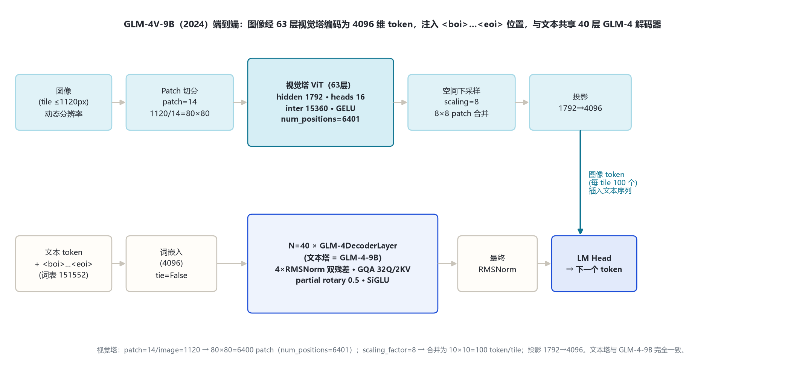
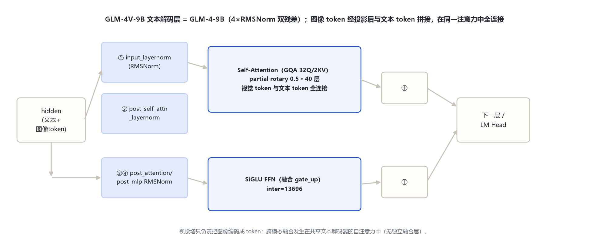
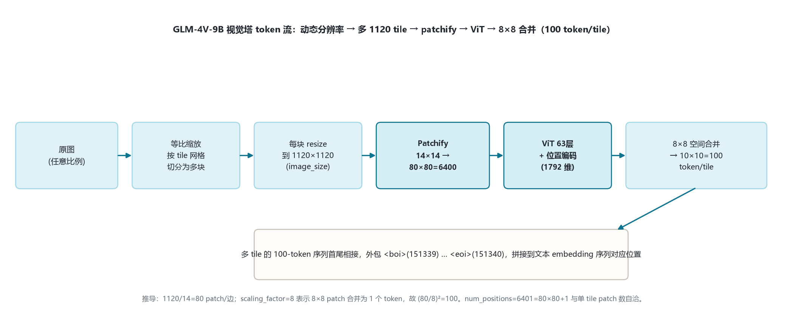

本页以 官方 config（2026-10-31 经 hf-mirror 拉取留档 _tools/_cfgpull/）为唯一依据。注意：transformers 本地 models\glm4v\ 原生模块对应 GLM-4.1V/4.5V 的新视觉塔（24 层 / 1536 / 336），与本页 GLM-4V-9B（63 层 / 1792 / 1120）不是同一塔。
| 字段 | 取值 |
|---|---|
| 入口类 | ChatGLMForConditionalGeneration（远程代码） |
| hidden_size / num_layers | 4096 / 40 |
| Q / KV 头 | 32 / multi_query_group_num=2（GQA 2 KV） |
| kv_channels（head_dim） | 128 |
| ffn_hidden_size（SiGLU） | 13696 |
| vocab / partial rotary / qkv bias | 151552 / original_rope(0.5) / true |
| post_layer_norm / rmsnorm / eps | true / true（4×RMSNorm 双残差）/ 1.5625e-6 |
| 字段 | 取值 | 说明 |
|---|---|---|
| num_hidden_layers | 63 | ViT 层数 |
| hidden_size | 1792 | 视觉特征维 |
| patch_size / image_size | 14 / 1120 | patch 边长 / 单 tile 分辨率 |
| num_heads / intermediate_size | 16 / 15360 | 视觉自注意力 / ViT FFN |
| hidden_act / layer_norm_eps | gelu / 1e-6 | 文本塔为 silu |
| num_positions | 6401 | = 80×80 patch + 1 |
| scaling_factor | 8 | 8×8 patch 空间合并为 1 token |
视觉 token 数 100/tile 为据 config 推导；投影层中间宽度 config 未单列，标注「以官方远程 modeling 实现为准」。文本塔机制详见 glm_4/index.md。
图像 → 动态分辨率切 tile（每块 ≤1120）→ patchify（14×14）→ 63 层 ViT → 8×8 合并 → 投影到 4096 → 包入 <boi>…<eoi> → 与文本拼接 → 40 层 GLM-4 文本解码器（自注意力融合）→ LM Head。

4×RMSNorm「pre+post」双残差块、GQA 32Q/2KV、partial rotary 0.5、融合 gate_up 的 SiGLU。区别仅在于自注意力序列里混入经投影的图像 token。

视觉 token 与文本 token 在同一解码器自注意力中全连接融合，不另设独立 cross-attention 或融合 MLP。
视觉塔深度 63、hidden 1792、16 头、intermediate 15360、GELU。位置编码槽 num_positions=6401 = (1120/14)²+1 = 6400+1。
原图等比缩放后按 1120×1120 tile 网格切分；每 tile 独立编码为固定 100 token，多 tile 序列首尾相接后统一包入 <boi>…<eoi>。
视觉 token（1792 维）投影到文本 hidden 4096 维，按占位文本标记位置写入输入 embedding，再送文本解码器。
融合发生在共享文本解码器的自注意力中：视觉 token 与文本 token 一起做全连接注意力，无独立 cross-attn。
与 GLM-4-9B 一致：GQA 32Q/2KV、head_dim 128、partial rotary 0.5、add_qkv_bias=true、缩放 head_dim^-0.5（详见 glm_4 页 §5）。视觉塔内部为标准 ViT 全自注意力（16 头），不做 GQA。
| 阶段 | 操作 | 输出形状（单 tile） |
|---|---|---|
| 原图 | 等比缩放 → tile 网格切分 | 若干 1120×1120 tile |
| Patchify | 14×14 patch 切分 | 80×80=6400 patch，1792 维 |
| 位置编码 | 加 ViT 位置编码（num_positions=6401） | 6400×1792 |
| ViT | 63 层自注意力 + GELU FFN | 6400×1792 |
| 空间合并 | scaling_factor=8（8×8 邻域合并） | 10×10=100 token，1792 维 |
| 投影 | linear → 文本 hidden | 100×4096 |
| 注入 | 包 <boi>…<eoi> 拼到文本序列 | 与文本 token 进 40 层解码器 |

| token | ID | 含义 |
|---|---|---|
| pad_token_id | 151329 | 填充 |
| eos_token_id | [151329,151336,151338] | 序列结束 |
| boi_token_id | 151339 | 图像 token 序列起始 <boi> |
| eoi_token_id | 151340 | 图像 token 序列结束 <eoi> |
| vocab_size | 151552 | 词表（GLM 系沿用） |
boi/eoi 是 GLM-4V-9B 相对 GLM-4-9B 唯一新增的特殊 token。
| 维度 | GLM-4-9B（纯文本） | GLM-4V-9B（本页 2024） | GLM-4.1V/4.5V（后续） |
|---|---|---|---|
| 视觉塔层数 | — | 63 | 24（更浅高效） |
| 视觉 hidden | — | 1792 | 1536 |
| 单 tile image_size | — | 1120 | 336 |
| patch / merge | — | 14 / scaling 8 | 14 / spatial_merge 2 |
| 投影到文本 hidden | — | 1792→4096 | 1536→4096 |
| 特殊 token | 无 boi/eoi | boi=151339 / eoi=151340 | + video_start/end、image/video_token |
GLM-4V-9B 在 GLM-4-9B 文本塔上挂深且高分辨率的视觉塔，开创 GLM 视觉-语言线；后续代把视觉塔改为更浅、更低单 tile 分辨率、更高合并比的高效设计（对应原生 models\glm4v\ 模块）。
视觉 token 数 100/tile 为据 config 推导值；核验日期：2026-10-31。